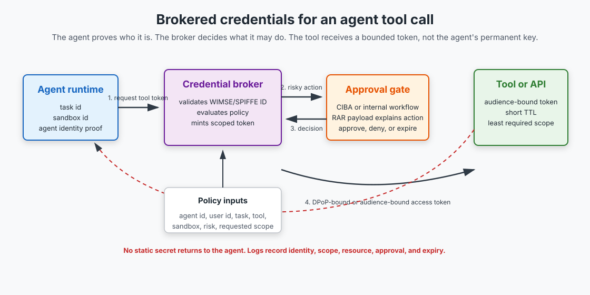

Ephemeral Credentials for AI Agents: Stop Giving Agents Static Keys
Static API keys were already a bad fit for CI/CD. They are worse for AI agents.
An agent is not a cron job with better autocomplete. It plans, calls tools, reads untrusted context, follows instructions from files and web pages, resumes after failure, and sometimes delegates work to another agent. A static key answers only one question: does this process have the secret? That is not the question production systems need to answer.
TL;DR: Treat agent access like workload identity plus delegated authorization. Give every agent run a verifiable runtime identity, route tool access through a credential broker, issue short-lived resource-bound tokens, bind high-risk tokens to proof-of-possession keys, and turn human approval into token issuance rather than a chat prompt. The standards pieces already exist: WIMSE/SPIFFE, OAuth token exchange, DPoP, resource indicators, Rich Authorization Requests, CIBA, and MCP's OAuth-based authorization profile.
Static keys answer the wrong question
Most first-generation agents got credentials the same way small web apps did: put keys in .env, mount them into the container, and hope the model never finds a path that prints them. This worked only because the early agents were demos.
The shape breaks down in production:
- A static key is not tied to a single task.
- It is not tied to a sandbox, session, trace, or human approval.
- It usually has more scope than the next tool call needs.
- It survives after the agent run ends.
- If it leaks, the attacker can replay it from somewhere else.
Bearer credentials are portable by design. Whoever holds the token can use it until it expires or gets revoked. For a normal backend service, you can reduce the risk with network boundaries, service identity, and careful secret distribution. For an agent, the model is reading more untrusted text, making more dynamic decisions, and operating through tools whose inputs may contain adversarial instructions. A credential that is both powerful and portable becomes the wrong abstraction.
The safer question is more specific:
Should this exact agent run, acting for this user, inside this sandbox, for this task, call this tool, against this resource, with this scope, before this expiry?
An .env key cannot answer that. A credential broker can.
The standards stack is finally concrete
This does not require a new auth religion. The useful pieces are already familiar to identity engineers.
As of June 4, 2026, the current IETF archive version of AI Agent Authentication and Authorization is draft-klrc-aiagent-auth-02. It is still an Internet-Draft, so treat it as work in progress, not finished law. But the direction is clear enough to build against.
The draft defines an Agent Identity Management System as a conceptual stack, not a product. It says agents need unique identifiers for authentication, authorization, auditing, and delegation. It uses WIMSE identifiers as the primary identifier model and points to SPIFFE IDs as an operationally mature implementation. It also says an agent credential has to cryptographically bind to the agent identifier. The identifier alone is not enough.
That matches how serious non-human identity already works:
- WIMSE/SPIFFE answers "which workload is this?"
- OAuth 2.0 answers "what delegated access did it receive?"
- RFC 8707 resource indicators answer "which protected resource is this token for?"
- RFC 8693 token exchange answers "how do I exchange one credential for a narrower one?"
- RFC 9449 DPoP answers "can the presenter prove it owns the key this token was bound to?"
- RFC 9396 Rich Authorization Requests answer "what exact transaction or operation is being approved?"
MCP is moving in the same direction. The MCP authorization specification treats a protected MCP server as an OAuth resource server. It requires protected resource metadata for authorization-server discovery and authorization server metadata for client discovery. The protocol does not make every MCP deployment safe, but the direction is OAuth resource servers, scoped tokens, and discoverable authorization, not a GitHub token pasted into a config file.
The brokered credential flow
The pattern I would copy is not "agent stores token." It is "agent asks for a token at the moment it needs one."

The flow is straightforward:
- The agent runtime receives a task and starts a session in a sandbox.
- The runtime obtains or presents a workload identity credential for that agent run.
- Before a tool call, the agent asks a broker for access.
- The broker evaluates policy using the agent identity, user identity, sandbox ID, task ID, requested tool, requested resource, requested scope, and risk level.
- If the action is sensitive, the broker triggers approval.
- If policy passes, the broker mints a short-lived token for the target tool or API.
- The tool receives a bounded token, not the agent's standing secret.
This is the same family of architecture as GitHub Actions OIDC, where a workflow can exchange an OIDC token for short-lived cloud credentials instead of storing a long-lived cloud key as a repository secret. It also looks like Vault dynamic secrets, where credentials are generated on demand, short-lived, and unique to the client.
Agents add two extra constraints. The broker needs task context, not just service identity. It also has to assume that the agent's next decision might be influenced by untrusted text. That is why policy should live outside the model loop.
What the broker needs to know
A useful broker decision has more inputs than scope=calendar.write.
At minimum, I want this record for every token request:
{
"agent_id": "spiffe://agents.example.com/blog-writer/session/8f13",
"user_id": "user:slava",
"session_id": "sess_8f13",
"sandbox_id": "sbx_42c1",
"task_id": "linear:SLA-24",
"tool": "github.create_pull_request",
"resource": "https://api.github.com/repos/slavadubrov/notes",
"requested_scope": ["pull_request:write"],
"risk": "write_external_state",
"ttl_seconds": 300,
"reason": "Open a draft pull request for the selected blog draft"
}
The policy engine can then make a decision a static secret cannot make:
- The agent may read the repository but may not write to
main. - The agent may open a draft PR but may not merge it.
- The token is valid only for
slavadubrov/notes. - The token expires in five minutes.
- The token is tied to the current sandbox/session.
- The action requires approval if it spends money, sends email, deploys, deletes data, or changes production state.
That decision belongs in code. Put it in OPA, Cedar, your gateway policy engine, or a plain service with tests. The important part is the boundary: the model can request access, but it does not grant access to itself.
Token exchange is the workhorse
OAuth token exchange, standardized in RFC 8693, is the workhorse for this architecture. The agent presents one credential and receives another credential with a different audience, scope, subject, actor, or lifetime.
For agents, that gives you a clean narrowing step:
- Start with a runtime identity credential.
- Exchange it for a tool-specific access token.
- Include the human or upstream system as the subject when the agent acts on behalf of someone else.
- Include actor context when the agent is the delegated actor.
- Refuse exchange when the requested action does not match the task policy.
The token exchange request might look like this at the broker boundary:
POST /oauth/token HTTP/1.1
Host: broker.example.com
Content-Type: application/x-www-form-urlencoded
grant_type=urn:ietf:params:oauth:grant-type:token-exchange&
subject_token=eyJ...agent-runtime-credential...&
subject_token_type=urn:ietf:params:oauth:token-type:jwt&
resource=https://api.github.com/repos/slavadubrov/notes&
scope=pull_request:write&
actor_token=eyJ...user-or-parent-agent-context...&
actor_token_type=urn:ietf:params:oauth:token-type:jwt
Do not let the stringiness fool you. The architecture is doing real work here. The broker can issue a token whose audience is one resource, whose scope is one operation family, whose expiry is short, and whose claims explain the delegation chain.
With RFC 8707 resource indicators, the resource parameter tells the authorization server which protected resource the token is meant for. With RFC 9396 Rich Authorization Requests, the request can include structured authorization_details instead of trying to squeeze every business decision into a flat scope string.
Scopes are fine for coarse permissions. They are clumsy for "approve payment of $50 to ExampleCorp" or "open a draft PR against this repository but do not mark it ready." RAR gives the authorization server and the human reviewer something more precise to inspect.
DPoP makes stolen tokens less portable
Short TTLs help, but a stolen five-minute token can still do damage if the operation is irreversible. For higher-risk tools, bind the token to a key.
DPoP is the OAuth proof-of-possession mechanism I would reach for first when mutual TLS is not practical. The client proves possession of a private key by signing a DPoP proof JWT for the HTTP request. The authorization server binds the issued token to the public key. The resource server then checks both the access token and the DPoP proof before granting access.
The payoff is direct: stealing the token is no longer enough. The attacker also needs the private key that the token is bound to.
For agents, the awkward question is where that private key lives.
I would avoid putting it in a file the agent can read. Better options:
- The host runtime signs DPoP proofs on behalf of the sandbox.
- A sidecar holds the key and exposes a narrow signing API.
- A broker mints per-call tokens and signs outbound requests itself.
- A hardware-backed key or platform key is used for high-value actions.
Each choice has trade-offs. A sidecar is easier to deploy than hardware-backed signing. A brokered outbound proxy is easier to audit but adds latency and a new dependency. The wrong answer is pretending the problem does not exist and dropping GITHUB_TOKEN=... into the agent environment.
Human approval should mint the token
Human-in-the-loop approval is often implemented as a pause in the agent loop:
The agent asks: "Can I do this?" The human clicks yes. The agent continues with the same credentials it already had.
That is better than nothing, but it misses the strongest enforcement point. Approval should mint the credential, not merely unblock the model.
Auth0's Asynchronous Authorization for AI Agents shows the shape. It uses Client-Initiated Backchannel Authentication, or CIBA, with optional Rich Authorization Requests. The agent backend sends a backchannel authorization request. The user approves or denies on a trusted device. If approved, the token endpoint returns the access token needed to complete the action.
That maps cleanly to agent workflows:
- Low-risk read: broker issues a short-lived token automatically.
- Medium-risk write: broker requires policy checks and maybe async approval.
- High-risk action: broker requires explicit approval with structured action details.
- Denied or expired approval: no token exists, so the tool call cannot happen.
The important detail is that the approval and the credential are coupled. If the user approves "send this invoice to Acme," the agent should not receive a general email-sending token. It should receive a token that can perform the approved operation, against the approved resource, for a short period.
A minimal broker implementation
Here is the shape in code. This is not a complete OAuth server. It is the core application logic I want to see before I trust an agent with write access.
broker.py excerpt:
from dataclasses import dataclass
from datetime import datetime, timedelta, timezone
@dataclass(frozen=True)
class TokenRequest:
agent_id: str
user_id: str
session_id: str
sandbox_id: str
task_id: str
tool: str
resource: str
scopes: tuple[str, ...]
risk: str
reason: str
def issue_tool_token(req: TokenRequest) -> str:
decision = policy_engine.evaluate(
subject=req.agent_id,
user=req.user_id,
action=req.tool,
resource=req.resource,
context={
"session_id": req.session_id,
"sandbox_id": req.sandbox_id,
"task_id": req.task_id,
"risk": req.risk,
"scopes": req.scopes,
},
)
if decision.requires_approval:
approval = approval_service.request(req, decision.authorization_details)
if not approval.approved:
raise PermissionError("tool token denied by approval policy")
expires_at = datetime.now(timezone.utc) + timedelta(minutes=5)
return token_service.mint_access_token(
subject=req.user_id,
actor=req.agent_id,
audience=req.resource,
scopes=req.scopes,
expires_at=expires_at,
cnf=runtime_key.thumbprint(req.sandbox_id),
)
The model never sees the signing key. The agent never sees a broad provider secret. The audit trail gets the full decision record: subject, actor, action, resource, scope, approval, expiry, and denial reason if blocked.
That audit trail matters. When something goes wrong, "the agent had PROD_ADMIN_KEY" is not an investigation. It is an admission that there is nothing useful to investigate.
Migration path
You do not need to rebuild identity across the whole company before improving one agent. Start with the highest-risk token.
- Inventory credentials mounted into the agent runtime.
- Classify each credential by resource, scope, operation type, and blast radius.
- Move the most dangerous write credential behind a broker.
- Replace the static secret with a runtime identity credential.
- Issue one short-lived token per tool call or per small batch of related calls.
- Add audience binding with resource indicators.
- Add approval-bound issuance for irreversible actions.
- Add DPoP or another proof-of-possession mechanism where replay risk matters.
- Log denied requests as carefully as successful ones.
This is deliberately incremental. Your first broker can be small. It can wrap one API. It can mint tokens with a five-minute TTL and a single audience. That is already a better security property than a long-lived key mounted into a sandbox that reads untrusted repositories.
The architecture usually pays for itself the first time you need to answer a simple question: could this agent have used this credential to do anything else?
With a static key, the honest answer is often "yes, probably." With brokered credentials, the answer can be specific.
What this does not solve
Ephemeral credentials are not a prompt-injection defense by themselves.
If an agent is tricked into requesting a harmful but allowed action, the credential system may still issue the token. If a tool has an authorization bug, a perfect token will not fix it. If logs include bearer tokens, observability becomes an exfiltration path. The WIMSE architecture draft calls out that logs and troubleshooting systems can disclose sensitive token material. That is not theoretical. Debug logging has been leaking secrets since before agents made it fashionable again.
This architecture reduces blast radius. It gives you a hard place to enforce policy. It gives you audit records that name the actor and resource. It makes stolen tokens less useful. It does not remove the need for sandboxing, tool allowlists, output filtering, dependency controls, or human review for high-risk actions.
There is also standards risk. The AI agent auth and WIMSE documents are still drafts. Different vendors will ship partial versions. Some MCP servers will keep accepting bearer tokens for a long time. Some OAuth providers will support token exchange but not DPoP, or RAR but not the exact approval UX you want.
That is fine. The durable pattern is not one draft number. The durable pattern is: runtime identity in, policy decision in the middle, short-lived scoped credential out.
Key Takeaways
- Static API keys are the wrong primitive for agents. They are too broad, too portable, too long-lived, and disconnected from task context.
- Agent credentials need runtime identity and delegation context. WIMSE/SPIFFE and OAuth token exchange give you a practical foundation without inventing a new auth stack.
- Credential brokers are the enforcement point. The agent can request access, but policy outside the model decides whether the token exists.
- Approval should issue the credential. A human "yes" should mint a short-lived, operation-bound token, not merely unblock an agent that already has broad access.
- Proof-of-possession matters for high-risk tools. DPoP or equivalent signing makes a stolen token harder to replay from another machine.
- This narrows blast radius, not intent. You still need sandboxing, tool policy, evals, logging hygiene, and review for irreversible operations.
References
- IETF: AI Agent Authentication and Authorization, draft-klrc-aiagent-auth-02
- IETF: WIMSE Applicability for AI Agents
- IETF: WIMSE Architecture
- Model Context Protocol: Authorization
- RFC 8693: OAuth 2.0 Token Exchange
- RFC 8707: Resource Indicators for OAuth 2.0
- RFC 9396: OAuth 2.0 Rich Authorization Requests
- RFC 9449: OAuth 2.0 Demonstrating Proof of Possession
- Auth0 for AI Agents: Asynchronous Authorization
- GitHub Docs: OpenID Connect
- HashiCorp Developer: Dynamic secrets
- NIST NCCoE: Accelerating the Adoption of Software and AI Agent Identity and Authorization